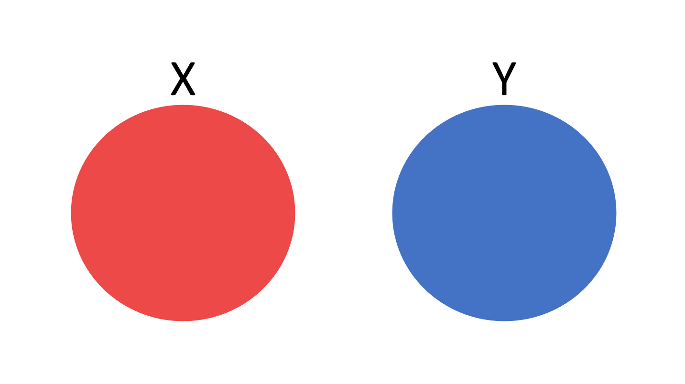
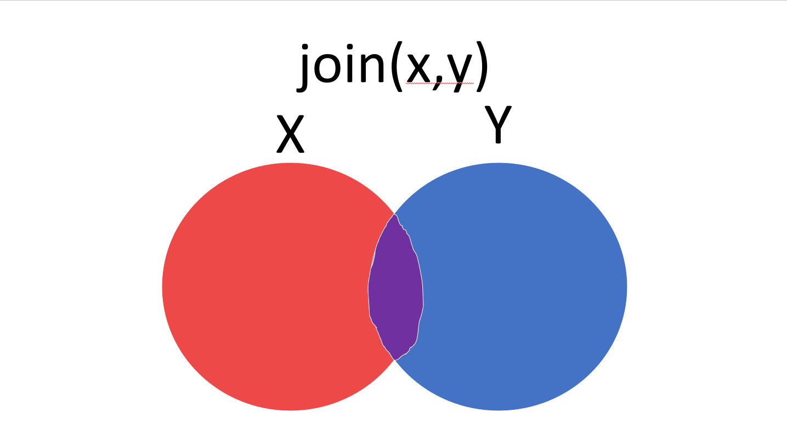
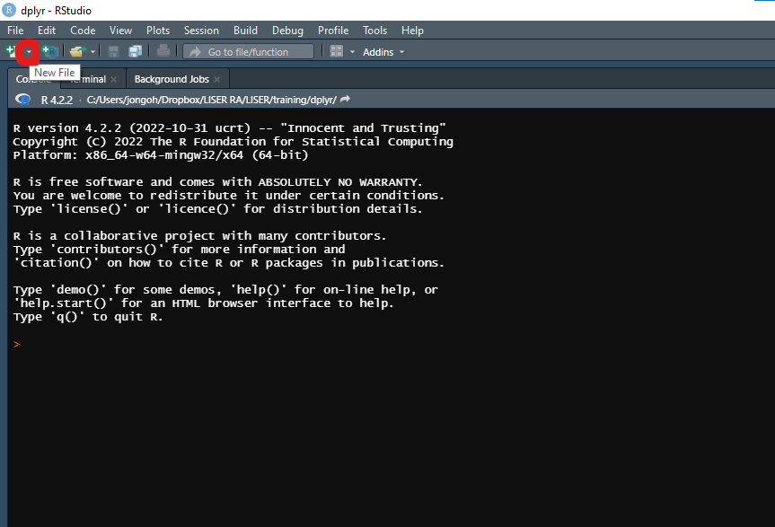
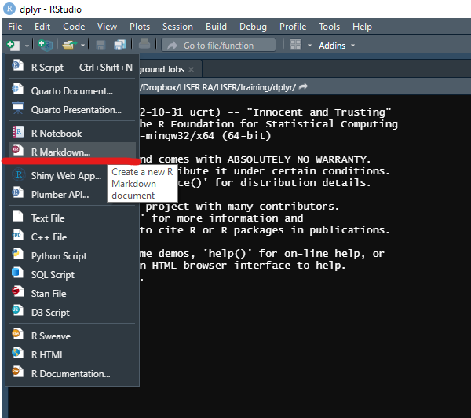

Data analysis with Tidyverse(dplyr)
from reading data to graphing results
LISER
December 20, 2022
Introduction
This training aims to teach you data analysis in R from A-Z.
Data analysis includes
reading in a data set
cleaning data / manipulating values in columns
creating new columns
merging data
statistical analysis
graphing results
writing reports
Let’s clean up the R environment!
Let’s set the environment for our R-coding.
Calling packages
Intuitive way
Calling packages
Easy way
Checking the description of the function
- You can type this in console
- highlight the function and press f1
- or manual type the function name in the search bar of the Help panel, that is located on the bottom right.
Setting working directory
Project
Project
The better way to do data analysis with R is by creating a project!!
Project allows you:
- to keep the R studio interface as it was before you closed it
- not to type in the working directory every time
- to manage your files more easily
Let’s try it out
Let’s create a “training” project at our desktop.
Follow the section 6 of this webpage.
Reading in Data
CSV - basic
# Clear plots
if(!is.null(dev.list())) dev.off()
# Clear console
cat("\014")
# Clean workspace
rm(list=ls())
#reading in packages
packages <- c("dplyr", "ggplot2", "stringr", "stringi")
lapply(packages, require, character.only=T)
#basic way
?read.csv
#let's assume gapminder.csv file is stored in the data folder
## decimal points = "."
data <- read.csv("data/gapminder.csv")
## decimal points = ","
data <- read.csv2("data/gapminder.csv")CSV - data.table
It is fast!(link)
CSV - data.table
#data table way
install.packages("data.table")
library(data.table)
##install.packages("data.table")
data <- fread("data/gapminder.csv")
#advantages of fread
data <- data.table::fread("data/gapminder.csv",
encoding = "UTF-8", #choose encoding
nrows = 10, #choose how many rows
select = c("country", "continent")) #choose which columnsSTATA, SAS, and SPSS
other tables(tab delimited and etc.)
In general, Google/Stack Overflow is your friend.
Calculating time to read a data file
Many times researchers would like to know how long it takes to read a file.
Especially if the file is large.
Checking/Cleaning the data
Checking the data
There are two ways to check/see your data
- pressing the variable(in our case “data”) button on your right-top panel
- or typing the variable name in the console
- type str(data)
Checking the data
For instance,
data <- gapminder::gapminder
str(data)
"tibble [1,704 × 6] (S3: tbl_df/tbl/data.frame)
$ country : Factor w/ 142 levels "Afghanistan",..: 1 1 1 1 1 1 1 1 1 1 ...
$ continent: Factor w/ 5 levels "Africa","Americas",..: 3 3 3 3 3 3 3 3 3 3 ...
$ year : int [1:1704] 1952 1957 1962 1967 1972 1977 1982 1987 1992 1997 ...
$ lifeExp : num [1:1704] 28.8 30.3 32 34 36.1 ...
$ pop : int [1:1704] 8425333 9240934 10267083 11537966 13079460 14880372 12881816 13867957 16317921 22227415 ...
$ gdpPercap: num [1:1704] 779 821 853 836 740 ..."first and the last of the data
Maybe you simply want to check the top N rows or the last N rows
Checking unique values
Maybe you simply want to check unique values of a column
Checking variable type
Changing variable types
list and vectors
list and vectors
# to change the list into a vector again
temp <- unlist(temp)
temp
'[1] "a" "1"'
#list can have sub-structures
temp <- list(country = c("France", "Germany"),
capital = c("Paris", "Berlin"),
population = c(67500000, 83130000))
'$country
[1] "France" "Germany"
$capital
[1] "Paris" "Berlin"
$population
[1] 67500000 83130000'list and vectors
You should be careful when you want to extract a value from a list
#list
temp[1]
'$country
[1] "France" "Germany"'
class(temp[1])
'[1] "list"'
#vector
temp[[1]]
'[1] "France" "Germany"'
class(temp[[1]])
'[1] "character"'
#trying to access a value of a sub-list(country)
temp[1][1] #wrong
'$country
[1] "France" "Germany"' #retrieved the whole sub-list(country) instead
temp[[1]][1] #right
'[1] "France"'Cleaning missing values
First, let’s create an example data.frame(table in R)
Cleaning missing values
Piping!
%>%
A special operator in the dplyr packages!
Think it as “then” in English.
Cleaning missing values
The advantage of piping is that it allows you to write concise codes. For instance,
#basic way
lux <- filter(df, country=="Luxembourg") #getting Luxembourg observation
lux <- mutate(lux, capital = "Luxembourg City") #changing the capital value for Luxembourg
lux
" country capital population
1 Luxembourg Luxembourg City 639000"
#piping!
lux <- df %>%
filter(country=="Luxembourg") %>%
mutate(capital = "Luxembourg City")
lux
" country capital population
1 Luxembourg Luxembourg City 639000"Cleaning missing values
Let’s say you have odd values for missing values e.g. -999
Cleaning missing values
#retrieve an observation that has the value "-999" in the capital columns
df %>%
filter(capital=="-999")
#change the capital value
df %>%
filter(capital=="-999") %>%
mutate(capital="Luxembourg City")
#change the population value
df %>%
filter(capital=="-999") %>%
mutate(capital="Luxembourg City") %>%
mutate(population = 639000)
#different version
df %>%
filter(capital=="-999") %>%
mutate(capital="Luxembourg City",
population = 639000)Cleaning missing values
Don’t forget to assign the changed values to the original data frame!
Cleaning missing values
Actually you need to use ifelse() function to get all observations
#re-creating the data frame
df <- data.frame(country = c("France", "Germany", "Luxembourg"),
capital = c("Paris", "Berlin", -999),
population = c(67500000, 83130000, "Non_existent"))
#changing the capital values!
df %>%
mutate(capital=ifelse(capital=="-999", #condition!
"Lux City", #if TRUE
"FALSE")) #if FALSE
" country capital population
1 France FALSE 67500000
2 Germany FALSE 83130000
3 Luxembourg Lux City Non_existent"Cleaning missing values
Actually you need to use ifelse() function to get all observations
#keeping the other values
df <- df %>%
mutate(capital=ifelse(capital=="-999",
"Luxembourg City",
capital)) #keeping the rest values
#changing the population as well
df <- df %>%
mutate(population=ifelse(population=="Non_existent",
639000,
population)) %>%
mutate(population = as.integer(population))
df
" country capital population
1 France Paris 67500000
2 Germany Berlin 83130000
3 Luxembourg Luxembourg City 639000"Custom function
Sometimes, you need to create your custom function to detect missing values.
For instance,
check_miss <- function(column, bool=F){
if(bool==F){#if one don't want T/F values for the result
fin_value <- is.na(column) | stringi::stri_isempty(column)
fin_value <- grep(T, fin_value) #returning the location where T is located
return(fin_value)
}else{
fin_value <- is.na(column) | stringi::stri_isempty(column) #returning a boolean vector
return(fin_value)
}
}Custom function
Let’s test the function
Creating/deleting columns
Creating columns
It is simple! Just use mutate() function to create a new column
Creating columns based on condition
There are two ways!
1.The intuitive way
#saving the value
temp_pop <- df %>%
filter(country %in% c("France", "Luxembourg")) %>%
summarize(french_pop = sum(population)) %>%
unlist()
temp_pop
"french_pop
68139000"
#and then creating the column
df <- df %>%
mutate(french_pop = temp_pop)
df
" country capital population total_pop french_pop
1 France Paris 67500000 151269000 68139000
2 Germany Berlin 83130000 151269000 68139000
3 Luxembourg Luxembourg City 639000 151269000 68139000"Creating columns based on condition
2.The complex way
df <- df %>%
#creating a column that indicates whether a country speaks french
mutate(french = ifelse(country %in% c("France", "Luxembourg"),
T,
F)) %>%
#grouping by french column
group_by(french) %>%
#creating a new column
mutate(french_pop = ifelse(french==T,
sum(population),
NA)) %>%
ungroup() #important!
df
" country capital population total_pop french_pop french
<chr> <chr> <int> <int> <int> <lgl>
1 France Paris 67500000 151269000 68139000 TRUE
2 Germany Berlin 83130000 151269000 NA FALSE
3 Luxembourg Luxembourg City 639000 151269000 68139000 TRUE "Creating columns based on condition
If you forget to ungroup…
df <- df %>%
mutate(french = ifelse(country %in% c("France", "Luxembourg"),
T,
F)) %>%
group_by(french) %>%
mutate(french_pop = ifelse(french==T,
sum(population),
NA))
#results in grouped sum by french still!
df %>%
mutate(temp = sum(population))
"country capital population total_pop french_pop french temp
<chr> <chr> <int> <int> <int> <lgl> <int>
1 France Paris 67500000 151269000 68139000 TRUE 68139000
2 Germany Berlin 83130000 151269000 NA FALSE 83130000
3 Luxembourg Luxembourg City 639000 151269000 68139000 TRUE 68139000"
#check it
is.grouped_df(df)
"[1] TRUE"Deleting columns
#choose the columns you want to exclude
df %>%
select(-french_pop, -french)
#choose the columns you only need
df %>%
select(country, capital, population, total_pop)
#declare the columns of interest first!
cols <- c("country", "capital", "population", "total_pop")
df %>%
select(all_of(cols)) #there is also any_of()Deleting columns
Let’s try an advanced example!
Deleting columns
Find columns that you want to erase!
Deleting columns
Declare the columns you want to erase!
#advanced
df <- data.frame(country = "France",
capital = "Pairs",
population = 67500000,
Y1950_population = NA,
Y1960_population = "",
Y1970_population = -999)
df
#check the column names of df
colnames(df)
#find the columns you want to delete!
grep("^Y", colnames(df))
grepl("^Y", colnames(df))
#declare the columns you want to erase!
del_cols <- colnames(df)[grep("^Y", colnames(df))]
del_colsDeleting columns
Remove the columns from the data frame!
#advanced
df <- data.frame(country = "France",
capital = "Pairs",
population = 67500000,
Y1950_population = NA,
Y1960_population = "",
Y1970_population = -999)
df
#check the column names of df
colnames(df)
#find the columns you want to delete!
grep("^Y", colnames(df))
grepl("^Y", colnames(df))
#declare the columns you want to erase!
del_cols <- colnames(df)[grep("^Y", colnames(df))]
del_cols
#exclude the columns!
df <- df %>%
select(-all_of(del_cols))
df
" country capital population
1 France Pairs 67500000"Deleting columns
- For more information on string matching based on regular expression, please check this website.
Merging data
Different joins
In R programming, people often use the term ‘join’ for merging the data, and many different types of join exist.
- left join
- right join
- inner join
- full join
Data
Let’s say we have two data sets: X and Y.

join
We would like the merge the two.
Think the colored area as observations! 
inner join
left join
right join
full join
etc.
Help page is accessible by typing
it shows simple explanation of each join.
For different joins and animation visit this github page
Example
left_join example
right_join example
inner_join example
full_join example
advanced merge
You can change the suffix setting if “.x” & “.y” does not help you have a full picture of the merging process
merged.df <- left_join(x = x.df,
y = y.df,
by = "id", #by which column will you merge
suffix = c(".population", ".language"))
merged.df
"id country.population capital.population population country.language capital.language language
1 1 France Paris 67500000 <NA> <NA> <NA>
2 2 Germany Berlin 83130000 Germany Berlin DE"advanced merge
Let’s remove redundant columns
merged.df <- left_join(x = x.df,
y = y.df,
by = "id", #by which column will you merge
suffix = c(".population", ".language"))
merged.df
#delete redundant columns
##retrieving column names that has ".language"
grepl(".language", colnames(merged.df))
del_cols <- colnames(merged.df)[grepl(".language", colnames(merged.df))]
##remove!
merged.df <- merged.df %>%
select(-all_of(del_cols))
merged.df
"id country.population capital.population population language
1 1 France Paris 67500000 <NA>
2 2 Germany Berlin 83130000 DE"advanced merge
Let’s rename the columns and fill in the blank language cell!
merged.df <- left_join(x = x.df,
y = y.df,
by = "id", #by which column will you merge
suffix = c(".population", ".language"))
merged.df
#delete redundant columns
##retrieving column names that has ".language"
grepl(".language", colnames(merged.df))
del_cols <- colnames(merged.df)[grepl(".language", colnames(merged.df))]
##remove!
merged.df <- merged.df %>%
select(-all_of(del_cols))
merged.df
"id country.population capital.population population language
1 1 France Paris 67500000 <NA>
2 2 Germany Berlin 83130000 DE"
#rename column names
##declaring the column names you want to have
col_names <- gsub(".population", "", colnames(merged.df)) #removing all the ".population" part
colnames(merged.df) <- col_names
#filling in the language column for France
merged.df <- merged.df %>%
mutate(language = ifelse(country=="France",
"FR",
language))
merged.df
" id country capital population language
1 1 France Paris 67500000 FR
2 2 Germany Berlin 83130000 DE"Simple statistical analysis
Checking average of a variable
Let’s read in a gapminder data set
Checking average of a variable
Simple version
Checking average of a variable
Calculating the average of Europe
Checking average of a variable
Calculating the average & standard deviation of the life Expectancy by continent
Checking average of a variable
If you want to save the resulted table, don’t forget to save it!
Linear regression
Simple linear regression
Linear regression
Checking the result
#simple linear regression
ols <- lm(formula = lifeExp ~ gdpPercap + continent,
data = data)
ols
summary(ols)
"Call:
lm(formula = lifeExp ~ gdpPercap + continent, data = data)
Residuals:
Min 1Q Median 3Q Max
-49.241 -4.479 0.347 5.105 25.138
Coefficients:
Estimate Std. Error t value Pr(>|t|)
(Intercept) 4.789e+01 3.398e-01 140.93 <2e-16 ***
gdpPercap 4.453e-04 2.350e-05 18.95 <2e-16 ***
continentAmericas 1.359e+01 6.008e-01 22.62 <2e-16 ***
continentAsia 8.658e+00 5.555e-01 15.59 <2e-16 ***
continentEurope 1.757e+01 6.257e-01 28.08 <2e-16 ***
continentOceania 1.815e+01 1.787e+00 10.15 <2e-16 ***
---
Signif. codes: 0 ‘***’ 0.001 ‘**’ 0.01 ‘*’ 0.05 ‘.’ 0.1 ‘ ’ 1
Residual standard error: 8.39 on 1698 degrees of freedom
Multiple R-squared: 0.5793, Adjusted R-squared: 0.5781
F-statistic: 467.7 on 5 and 1698 DF, p-value: < 2.2e-16"Linear regression
Checking the regression result in detail
#ols result!
ols_result <- summary(ols)
#checking the coefficients
ols_result$coefficients
" Estimate Std. Error t value Pr(>|t|)
(Intercept) 4.788852e+01 3.398053e-01 140.92927 0.000000e+00
gdpPercap 4.452704e-04 2.349795e-05 18.94933 8.552893e-73
continentAmericas 1.359272e+01 6.007856e-01 22.62491 2.822476e-99
continentAsia 8.657793e+00 5.554859e-01 15.58598 2.719424e-51
continentEurope 1.757234e+01 6.257430e-01 28.08236 7.595526e-143
continentOceania 1.814604e+01 1.787426e+00 10.15205 1.502557e-23"
class(ols_result$coefficients)
'"matrix" "array"'Linear regression
Dealing with scientific notations(e)
#scientific notation
ols_result$coefficients[,1]
" (Intercept) gdpPercap continentAmericas continentAsia
4.788852e+01 4.452704e-04 1.359272e+01 8.657793e+00
continentEurope continentOceania
1.757234e+01 1.814604e+01"
format(ols_result$coefficients[,1], scientific = F)
' (Intercept) gdpPercap continentAmericas continentAsia
"47.8885161789" " 0.0004452704" "13.5927218705" " 8.6577934769"
continentEurope continentOceania
"17.5723409668" "18.1460410154" '
#NOTE THAT the numbers are characters now!Linear regression
#scientific notation
ols_result$coefficients[,1]
"(Intercept) gdpPercap continentAmericas continentAsia
4.788852e+01 4.452704e-04 1.359272e+01 8.657793e+00
continentEurope continentOceania
1.757234e+01 1.814604e+01"
format(ols_result$coefficients[,1], scientific = F)
' (Intercept) gdpPercap continentAmericas continentAsia
"47.8885161789" " 0.0004452704" "13.5927218705" " 8.6577934769"
continentEurope continentOceania
"17.5723409668" "18.1460410154" '
#NOTE THAT the numbers are characters now!
#try round() function
round(ols_result$coefficients[,1],4) #rounding up at the fourth decimal point
' (Intercept) gdpPercap continentAmericas continentAsia continentEurope continentOceania
47.8885 0.0004 13.5927 8.6578 17.5723 18.1460'Linear regression
For more details of running different regressions, please check this website: Intorduction to Econometrics with R.
Plotting graphs
ggplot
Now, it is time to plot pretty graphs!
We will use ggplot2 package for plotting graphs.
Please check out this link for more information.
Our goal
Our goal is to draw a graph like this 
basic dot plot
Let’s start with a basic plot
usual graph types
dot plot - geom_point()
line graph - geom_line()
bar plot - geom_bar(x)
bar plot - geom_col(x,y)
density graph - geom_density()
with multiple countries
Multiple countries!
Impossible to differentiate which point belongs to which country
Adding colors
Let’s add some colors according to a country!
Adding colors
Let’s add some colors according to a country!
#simple bar(column) graph for some European countries
data %>%
filter(country %in% c("United Kingdom", "Germany", "France", "Italy", "Spain")) %>%
ggplot() +
geom_col(aes(x = year, y = gdpPercap, color = country)) #note that it is important to put color = country inside of aes()
#for bar graphs you should use fill!
data %>%
filter(country %in% c("United Kingdom", "Germany", "France", "Italy", "Spain")) %>%
ggplot() +
geom_col(aes(x = year, y = gdpPercap, fill = country)) #note that it is important to put color = country inside of aes()Changing axis labels
Setting the plot title
#simple line graph for some European countries
data %>%
filter(country %in% c("United Kingdom", "Germany", "France", "Italy", "Spain")) %>%
ggplot() +
geom_line(aes(x = year, y = gdpPercap, color = country)) +
labs(x="Year", y="Real GDP per capita in USD",
title = "Plotting GDP per Capita of Five European Countires over Time")Changing legend position
#simple line graph for some European countries
data %>%
filter(country %in% c("United Kingdom", "Germany", "France", "Italy", "Spain")) %>%
ggplot() +
geom_line(aes(x = year, y = gdpPercap, color = country)) +
labs(x="Year", y="Real GDP per capita in USD",
title = "Plotting GDP per Capita of Five European Countires over Time") +
theme(legend.position = "bottom")Changing title/legend/axis text size
#simple line graph for some European countries
data %>%
filter(country %in% c("United Kingdom", "Germany", "France", "Italy", "Spain")) %>%
ggplot() +
geom_line(aes(x = year, y = gdpPercap, color = country)) +
labs(x="Year", y="Real GDP per capita in USD",
title = "Plotting GDP per Capita of Five European Countires over Time") +
theme(legend.position = "bottom",
legend.title = element_text(size = 20), #changing legend title size
legend.text = element_text(size = 20), #changing legend text size
axis.text.x = element_text(size = 15), #changing axis text size
axis.title.x = element_text(size = 20), #changing axis title size
axis.text.y = element_text(size = 15), #changing axis text size
axis.title.y = element_text(size = 20), #changing axis title size
title = element_text(size = 20)) #changing title sizeChanging legend box size
#simple line graph for some European countries
data %>%
filter(country %in% c("United Kingdom", "Germany", "France", "Italy", "Spain")) %>%
ggplot() +
geom_line(aes(x = year, y = gdpPercap, color = country)) +
labs(x="Year", y="Real GDP per capita in USD",
title = "Plotting GDP per Capita of Five European Countires over Time") +
theme(legend.position = "bottom",
legend.title = element_text(size = 20), #changing legend title size
legend.text = element_text(size = 20), #changing legend text size
axis.text.x = element_text(size = 15), #changing axis text size
axis.title.x = element_text(size = 20), #changing axis title size
axis.text.y = element_text(size = 15), #changing axis text size
axis.title.y = element_text(size = 20), #changing axis title size
title = element_text(size = 20), #changing title size
legend.key.size = unit(1.5, 'cm')) #changing legend color box sizeChanging legend title
#simple line graph for some European countries
base_plot <- data %>%
filter(country %in% c("United Kingdom", "Germany", "France", "Italy", "Spain")) %>%
ggplot() +
geom_line(aes(x = year, y = gdpPercap, color = country)) +
labs(x="Year", y="Real GDP per capita in USD",
title = "Plotting GDP per Capita of Five European Countires over Time") +
theme(legend.position = "bottom",
legend.title = element_text(size = 20), #changing legend title size
legend.text = element_text(size = 20), #changing legend text size
axis.text.x = element_text(size = 15), #changing axis text size
axis.title.x = element_text(size = 20), #changing axis title size
axis.text.y = element_text(size = 15), #changing axis text size
axis.title.y = element_text(size = 20), #changing axis title size
title = element_text(size = 20), #changing title size
legend.key.size = unit(1.5, 'cm')) + #changing legend color box size
scale_color_discrete(name = "Country") #changing legend title
base_plotFormatting axis tick
#simple line graph for some European countries
base_plot <- data %>%
filter(country %in% c("United Kingdom", "Germany", "France", "Italy", "Spain")) %>%
ggplot() +
geom_line(aes(x = year, y = gdpPercap, color = country)) +
labs(x="Year", y="Real GDP per capita in USD",
title = "Plotting GDP per Capita of Five European Countires over Time") +
theme(legend.position = "bottom",
legend.title = element_text(size = 20), #changing legend title size
legend.text = element_text(size = 20), #changing legend text size
axis.text.x = element_text(size = 15), #changing axis text size
axis.title.x = element_text(size = 20), #changing axis title size
axis.text.y = element_text(size = 15), #changing axis text size
axis.title.y = element_text(size = 20), #changing axis title size
title = element_text(size = 20), #changing title size
legend.key.size = unit(1.5, 'cm')) + #changing legend color box size
scale_color_discrete(name = "Country") +#changing legend title
scale_y_continuous(labels= scales::comma) #formatting the y axis tick
base_plotAdding GDP text labels on the graph
First, let’s create a separate data frame for the GDP text labels.
Adding GDP text labels on the graph
Second, let’s add another layer!
#print(sort(unique(data$year)))
"[1] 1952 1957 1962 1967 1972 1977 1982 1987 1992 1997 2002 2007"
#creating the GDP text data frame
gdp_text.df <- data %>%
filter(country %in% c("United Kingdom", "Italy")) %>%
filter(year==1952 | year==2007)
#adding the text layer
final_plot <- base_plot +
geom_text(data = gdp_text.df,
aes(x = year, y = gdpPercap, label = gdpPercap))
final_plotAdjusting the text size/position
#print(sort(unique(data$year)))
"[1] 1952 1957 1962 1967 1972 1977 1982 1987 1992 1997 2002 2007"
#creating the GDP text data frame
gdp_text.df <- data %>%
filter(country %in% c("United Kingdom", "Italy")) %>%
filter(year==1952 | year==2007)
#adding the text layer
mid_plot <- base_plot +
geom_text(data = gdp_text.df,
aes(x = year, y = gdpPercap, label = gdpPercap),
size = 7, #size adjustment
vjust = 0.7) #position adjustment
mid_plotFormatting the GDP neatly
#print(sort(unique(data$year)))
"[1] 1952 1957 1962 1967 1972 1977 1982 1987 1992 1997 2002 2007"
#creating the GDP text data frame
gdp_text.df <- data %>%
filter(country %in% c("United Kingdom", "Italy")) %>%
filter(year==1952 | year==2007)
#adding the text layer
mid_plot <- base_plot +
geom_text(data = gdp_text.df,
aes(x = year, y = gdpPercap,
label = round(gdpPercap)), #rounding up the GDP!
size = 7, #size adjustment
vjust = 0.7) #position adjustment
mid_plotFormatting the GDP neatly
#print(sort(unique(data$year)))
"[1] 1952 1957 1962 1967 1972 1977 1982 1987 1992 1997 2002 2007"
#creating the GDP text data frame
gdp_text.df <- data %>%
filter(country %in% c("United Kingdom", "Italy")) %>%
filter(year==1952 | year==2007)
#adding the text layer
mid_plot <- base_plot +
geom_text(data = gdp_text.df,
aes(x = year, y = gdpPercap,
label = format(round(gdpPercap), big.mark = ",", big.interval = 3L)), #rounding up the GDP and adding a comma!!
size = 7, #size adjustment
vjust = 0.7) #position adjustment
mid_plotAdding Country text labels on the graph
Let’s create a separate data frame for the country text labels.
Adding country text labels on the graph
Second, let’s add another layer!
#creating the country text data frame
country_text.df <- data %>%
filter(country %in% c("United Kingdom", "Germany", "France", "Italy", "Spain"))%>%
filter(year==2002)
#adding the text layer
final_plot <- mid_plot +
geom_text(data = country_text.df,
aes(x = year, y = gdpPercap, label = country, color = country),
size = 7,
vjust = 0.7,
show.legend = F) #not showing the legend
final_plotSaving the graph
Let’s save the final_plot
Writing a report
R Markdown
What is an R Markdown?
-> Think as a latex file combined with R!
Check these links:
installing knitr package
knitr package is an essential package for any R Markdown file
It also allows the user to format tables and graphs neatly.
creating a new R Markdown file
creating a new R Markdown file
choosing the output type(pdf)
This session only focuses on pdf format.
If you are more interested in html format, please check out:
Setting the yaml header
---
title: "R markdwon guide"
author: "Jongoh Kim"
date: "`r format(Sys.time(), '%d %B, %Y')`" #setting the date by dd month, yyyy
output:
pdf_document:
toc: true #add a table of contents a the start of a document
toc_depth: 3 #The lowest level of headings to add to table of contents (e.g. 2, 3)
number_sections: true #numbering the sections
urlcolor: blue #setting the hyperlink color to blue
---Jumping right into the R markdown
Check out the ‘markdown.Rmd’ file from the github page
Thanks!
Source code for slides:
https://github.com/jongohkim91/R-A-Z
Good resources
R for Data Science from Hadley Wickham and Garrett Grolemund:
ggplot2:
https://ggplot2.tidyverse.org/
R Markdown: The Definitive Guide from Yihui Xie, J. J. Allaire, and Garrett Grolemund:
https://bookdown.org/yihui/rmarkdown/